从零申请应用 → 拿 Client ID / Secret → 授权拿到令牌（含新版界面 & 全部易错点）
Google Cloud 链接已指定当前项目 shanbo-search-console。使用其他项目时，请在控制台顶部切换项目。链接在新标签页打开，教程会保留。
本地页面需要项目正在运行。没有固定地址的按钮（保存、添加测试用户、授权确认）请先打开所在页面再操作；回调地址用于填写，不能作为授权入口直接打开。
播放列表读取失败时会显示错误与重试提示，不会当成“没有播放列表”。本功能只读取既有分类，不会创建或修改 YouTube 播放列表。
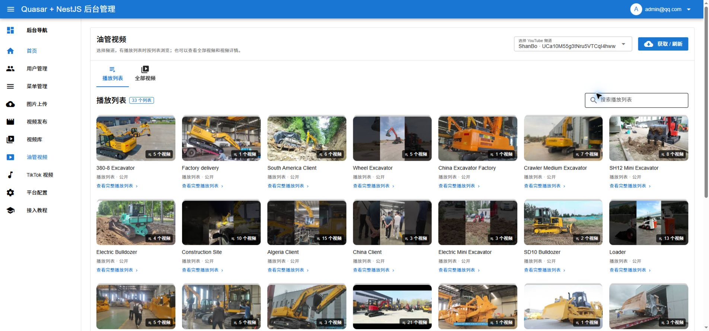
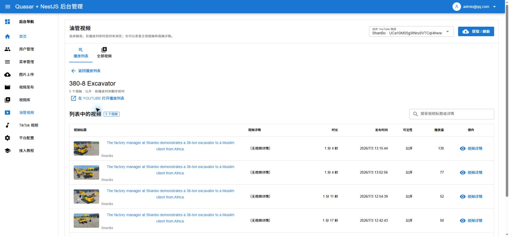
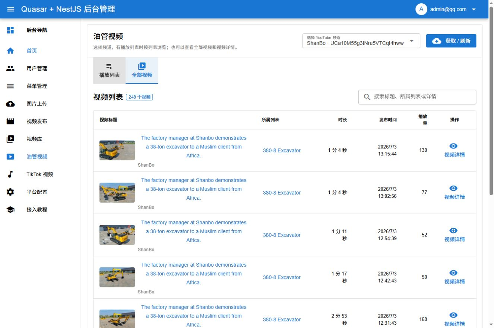
「视频发布」与「油管视频」都提供视频列表、视频标题和「视频详情」入口。
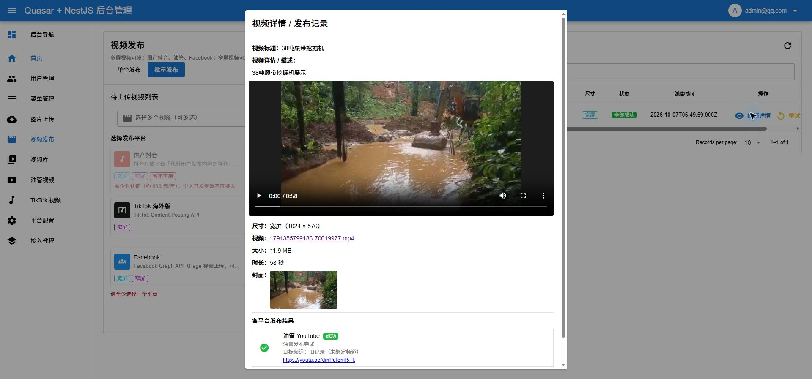
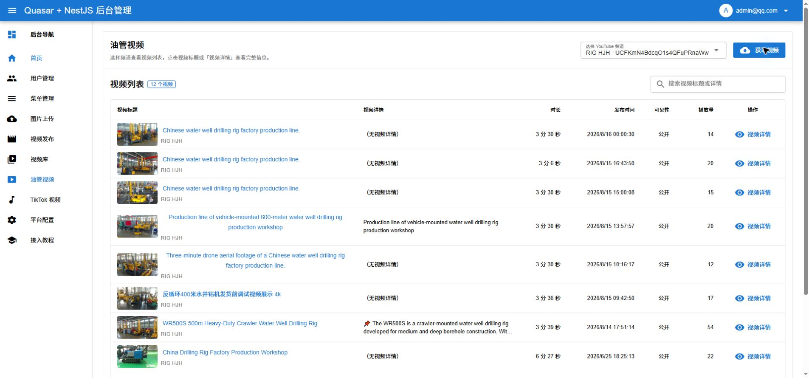
此步骤含账号或网络隐私，截图仅保存在本机，请按上述文字操作。
本次验证了已有上传记录详情、频道视频列表、搜索和详情弹窗，没有实际上传或发布新视频。自动文件选择测试受 Chrome 扩展文件访问权限限制，未完成端到端上传验证。
Google Cloud 的应用可以供不同频道授权使用。本系统分别保存每个频道的令牌，新增账号不会覆盖原频道。
UC… 频道 ID。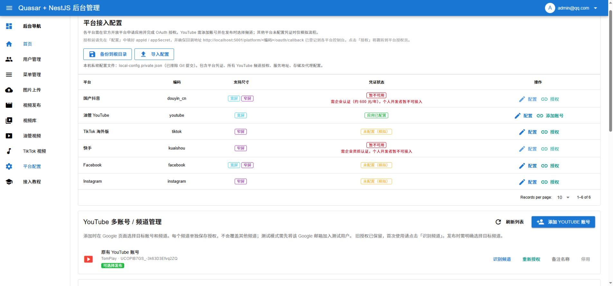
2026-10-07 已完成第二个账号的接入：原有 TomPlay 与新增 RIG HJH 同时保留，均显示「可选择发布」。新增账号无需重新创建 Google Cloud 项目或应用密钥。
如果 Google 提示 403 access_denied，并说明应用正在测试、仅限获批测试人员，先用项目管理员账号进入「打开目标对象 / 测试用户 ↗ → 测试用户 → Add users」。输入实际频道账号的邮箱，按 Enter 确认，再保存。
此步骤含账号或网络隐私，截图仅保存在本机，请按上述文字操作。
此步骤含账号或网络隐私，截图仅保存在本机，请按上述文字操作。
如果目标账号登录在另一个 Chrome 用户窗口，在那个窗口打开 本地平台配置页面 ↗，登录本地后台后点击「添加 YouTube 账号」。也可在原窗口选择「使用其他账号」，再由账号本人登录目标账号。
此步骤含账号或网络隐私，截图仅保存在本机，请按上述文字操作。
添加测试用户后，本例进入「此应用未经 Google 验证」提示页。核对这是自己创建的应用，再由账号本人继续。下一页确认目标邮箱和请求权限，然后完成授权。以下两张图由用户在 RIG HJH 窗口提供，授权确认由用户本人完成。
此步骤含账号或网络隐私，截图仅保存在本机，请按上述文字操作。
此步骤含账号或网络隐私，截图仅保存在本机，请按上述文字操作。
返回后台后，列表同时显示 TomPlay（UCOPlB7GS_-3k63D3Efvq2ZQ）和 RIG HJH（UCFKmN4BdcqO1s4QFuPRnaWw）。已点击「备份到根目录」，页面确认保存 6 个平台、2 个 YouTube 账号及环境配置到被 Git 忽略的 local-config.private.json。
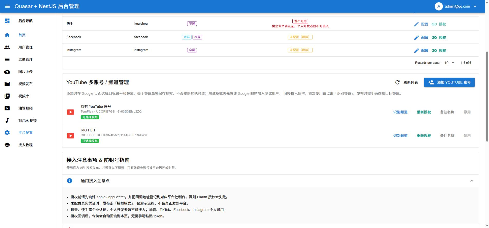
进入「视频发布」，勾选 YouTube，在「YouTube 目标频道（必选）」选择 RIG HJH，并核对下方目标频道 ID。批量发布也使用同一个所选频道。
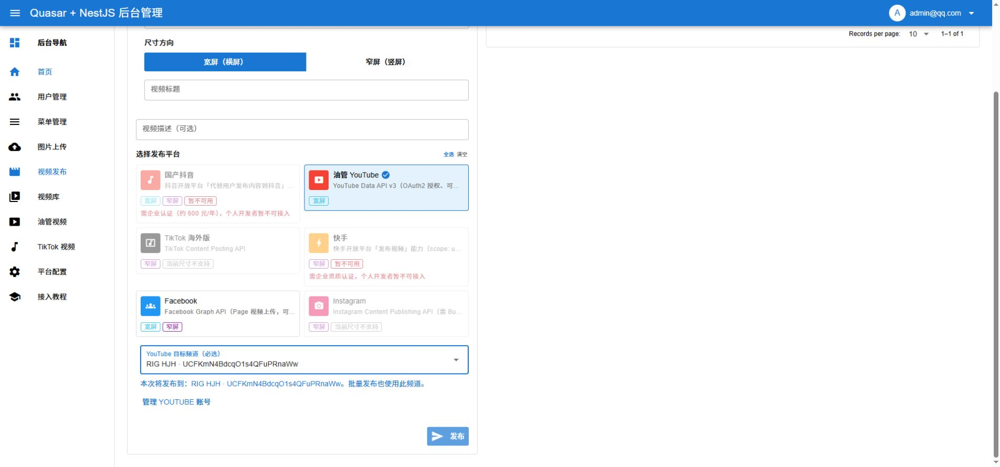
2026-10-07，在 Windows 本地环境完成 YouTube 授权，页面显示「授权成功，令牌已保存」，并成功读取 TomPlay 频道的视频列表。本次没有上传或发布新视频。
此步骤含账号或网络隐私，截图仅保存在本机，请按上述文字操作。
在创建凭证的 Google Cloud 项目中，进入「Google Auth Platform → 用户端」。Google Cloud 项目账号可以与发布频道的账号不同；测试用户要填写实际授权账号的邮箱。
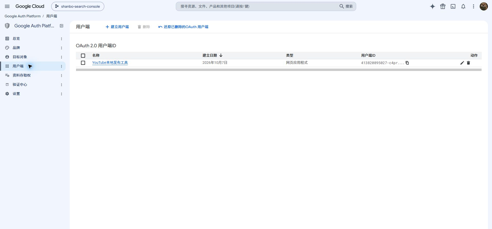
http://localhost:5001/platform/youtube/oauth/callback该地址放在「已授权的重新导向 URI」，JavaScript 来源可以留空。务必使用自己的 Client ID 与密钥，不要复制截图中的客户端 ID。
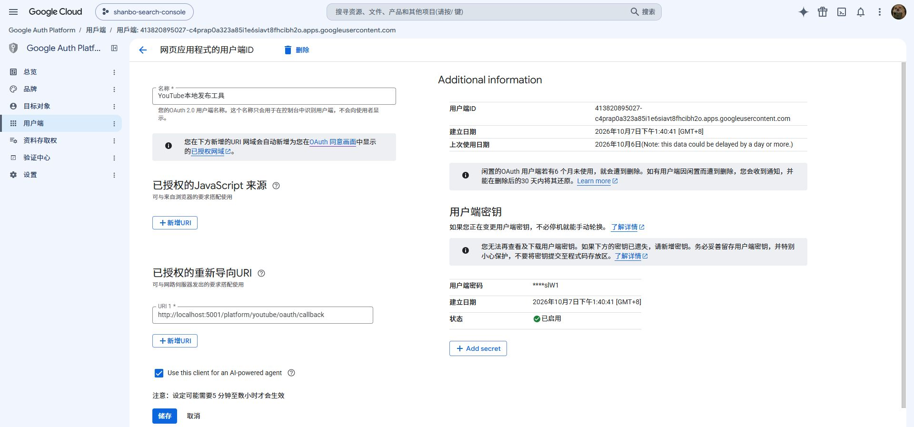
首次配置时，只需手动填「应用 ID」和「应用密钥」。access_token 与 refresh_token 会在授权成功后保存，open_id 对 YouTube 无需填写。备注可留空；已有令牌无需为了重试而清空。
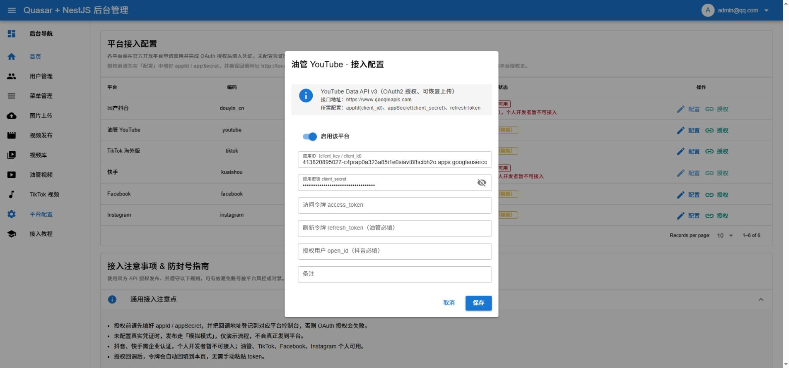
保存配置后点击「授权」，选择测试用户名单中的实际频道账号，核对应用与所请求权限后完成授权。返回系统后，以成功提示和「已配置凭证」为准。
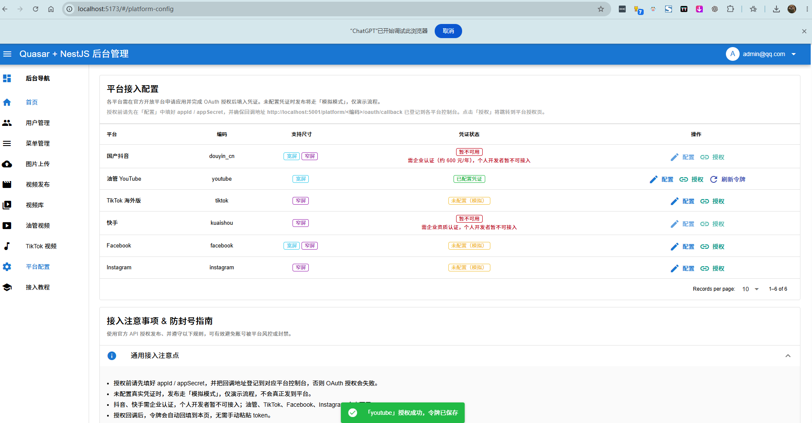
进入「油管视频」，点击「获取视频」。核对显示的频道名称是否为目标频道。本例成功显示 TomPlay 的视频，说明令牌刷新与 YouTube 数据读取链路可用；尚未验证上传发布。
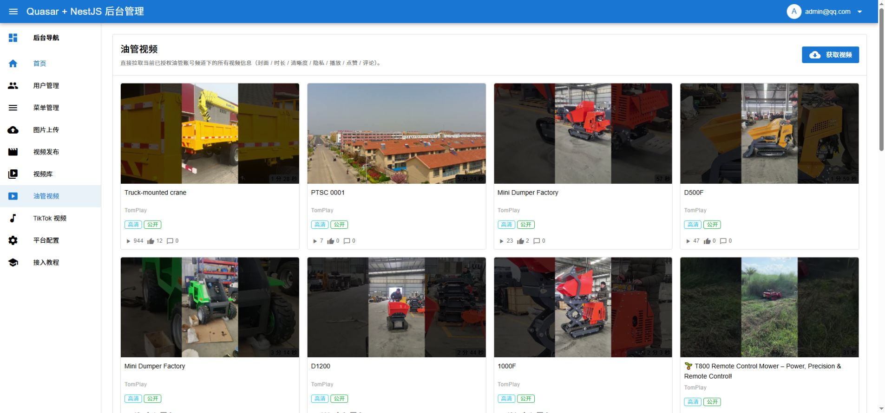
抖音 / 快手 / TikTok 都是在一个「开放平台网站」里直接建应用；但 Google 把这件事拆成了三层，而且还要单独配一个「同意屏幕」，所以步骤最多：
「项目」 → 「开通 API」 → 「OAuth 客户端」 → 「同意屏幕」
这里的「项目」就是 Google 里"一个应用"的容器，只是名字叫"项目"，别被绕晕。
授权失败：fetch failed 表示后端网络请求失败。本次排查发现是直连 Google 超时，但该错误也可能由 DNS、证书或连接中断引起，应结合实际检查判断。
start-backend-proxy.bat，适用于本机 Node.js 24+ 和已有的 127.0.0.1:7890 HTTP 代理；使用前先停止原后端，前端保留运行。其他电脑需按实际端口配置。video-upload，点「创建」。YouTube Data API v3，点进去，点「启用」。新版在 左侧菜单 有这些项（在「API 和服务」里，也可能叫「Google Auth Platform」）：
Overview （总览）
Branding （品牌信息：应用名、支持邮箱）
Audience （受众：老版的 External / Internal 在这里）
Clients （客户端：就是"凭据 / Client ID"）
Data access （数据访问：权限 scope）
Securityvideo-upload| 字段 | 填什么 |
|---|---|
Authorized JavaScript origins（授权 JavaScript 来源） |
留空，什么都不填（它只接受域名、不能带路径） |
Authorized redirect URIs（授权重定向 URI） |
填下面这一行（点「+ Add URI」再贴）： |
http://localhost:5001/platform/youtube/oauth/callback填好后点 Create，弹窗会显示两个值，复制下来别关：
appIdappSecretadmin@qq.com / admin123）。youtube.upload（视频上传）和 youtube.readonly（读取频道）、youtube.force-ssl（包括管理播放列表）权限。授权成功后，回「视频发布」页选一个横屏或竖屏视频，勾选「油管 YouTube」，再选择目标频道，核对名称和频道 ID 后提交。
| 坑 | 现象 / 原因 | 解决办法 |
|---|---|---|
| fetch failed | 点授权后报「授权失败：fetch failed」，后端连不上 Google | 检查后端的代理、DNS 与连接错误；本例使用虚拟网卡和规则模式后成功。也可为 Node 后端显式指定可用代理。 |
| 找不到 External → Create | Google 改版了，老教程的按钮没了 | 改去左侧菜单 Branding + Audience 配置 |
| 回调地址填错框 | 报 "Invalid Origin: must not contain a path" | 回调地址填在 Authorized redirect URIs，JavaScript origins 留空 |
| 回调地址不匹配 | Google 报 redirect_uri_mismatch | 填的和系统里一字不差：http://localhost:5001/platform/youtube/oauth/callback |
| "应用未验证" | 授权时弹红字警告 | 点「高级」→「前往 xxx（不安全）」继续 |
| 授权不了 / 账号被拒 | 账号没加进测试用户 | 去 Audience → Test users 加自己的邮箱 |
| 后端没启动 | 点授权后回调地址打不开 | 确保后端跑在 5001 端口（回调地址就是后端的地址） |
横屏、竖屏均可发布：选择“窄屏（竖屏）”后 YouTube 仍可选，单个和批量发布均支持。旧版“仅宽屏”是项目筛选配置的问题，已修正。Shorts 分类由 YouTube 判断，参见官方说明。
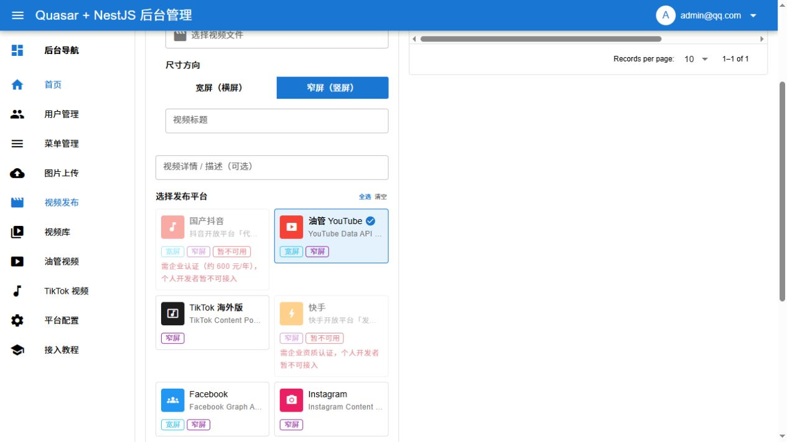
旧账号可能需要重新授权：创建列表和添加视频需要 youtube.force-ssl 权限。若提示缺少播放列表管理权限，在平台配置 → YouTube 账号管理中对该频道重新授权。必要时在Google 数据访问权限添加此范围，再返回应用重新授权。授权完成后重新备份本地私有配置。
如果创建请求中断，请先刷新列表确认是否已创建，再决定是否重试，避免重名列表。已经成功发布的视频仍按原规则去重，不能通过再次发布把它移动到另一列表。
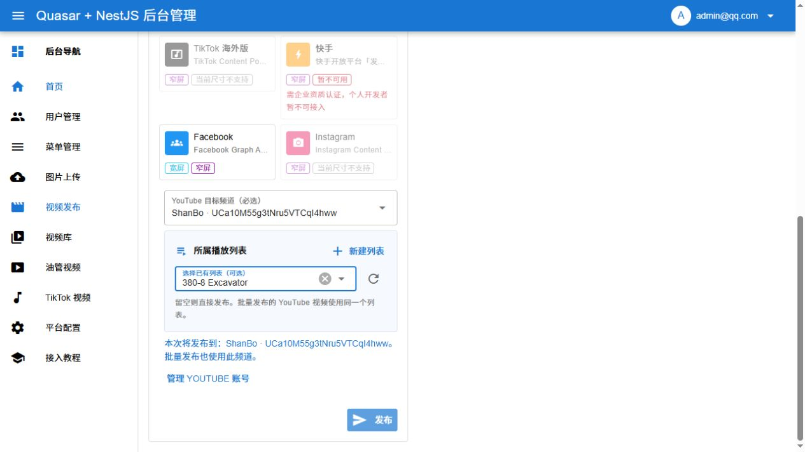
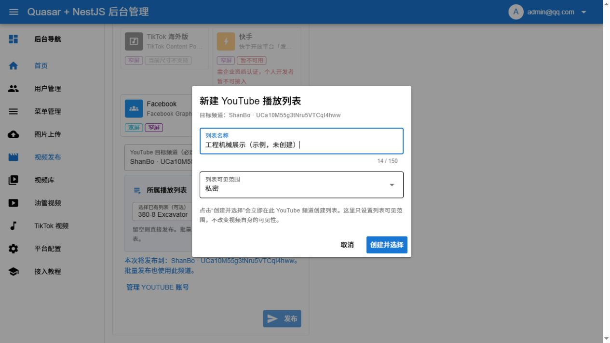
| 我们的系统字段 | Google 的叫法 | 说明 |
|---|---|---|
appId | Client ID / 客户端 ID | 应用唯一标识 |
appSecret | Client Secret / 客户端密钥 | 应用密钥 |
refreshToken | refresh_token | 油管发布时必须的刷新令牌（授权后自动保存） |
| 回调地址 | Redirect URI | http://localhost:5001/platform/youtube/oauth/callback |
本文档对应项目：视频多平台上传系统（油管 YouTube 平台接入）。
完整分平台教程见 PLATFORM_TUTORIAL.md，接口细节见 PLATFORM_CONFIG.md。